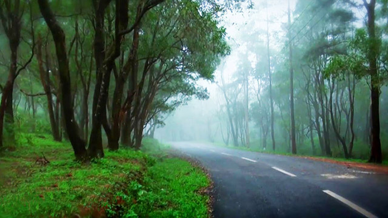

Thiruvananthapuram
Thiruvananthapuram, the jewel in the emerald necklace that Kerala is for the Indian sub-continent, must surely have Parasuramanbeen a “must see” destination for ages, long before National Geographic Traveller classified it as one. Surely long before Sage Parasurama , according to local legend, threw his divine battle axe from Kanyakumari to Gokarnam to west Kerala, God’s own land, from the Varuna the sea god; before the times of Mahabali the democratic and just ruler of this wonderful land who was sent down to the netherworld through deceit. It doesnt take any flights of fancy to imagine that this land fired the imaginations of intrepid travellers and explorers like Columbus, Vasco da Gama, Marco Polo, Fa Hien, and quite possibly, countless others from the pages of history, recorded or not
Top Destinations

Kovalam Beach
Kovalam Beach is the treasure chest of multitude of adventure activities. Along with the sessions of para-sailing, diving and wind surfing, the beach also allows you to go on a leisure walk and offers a playful swimming time. Tourists have a choice to opt for lounge chairs to just sit and gaze at the most extraordinary sunrises and sunsets. The gleaming blue water and silver sands offers a quality time to enjoy nature at its best. There are many beach resorts that offer customized services. From lip-smacking dishes to allocation of rooms, these retreats have impeccable services which one can easily avail. The well-trained staff offers comfortable and convenient environment. Assisting in planning a day on the beach, the stays take special care of the guests.
Ponmudi
The captivating hill station of Ponmudi is at a distance of 61 kms from Trivandrum. It is situated 915 meters above sea level and offers respite from the heat and hustle and bustle of other cities. Its narrow, meandering pathways, dark woods and soothing climate make it a splendid location to spend a holiday at. A multitude of colourful butterflies, springs and rapids, myriad species wild flowers and the deer park nearby are the key attraction of this fascinating hill station.
Varkala Beach
This secluded beach is situated 54 kms north of Trivandrum. An exemplary escape from the bustling crowd of the city, Varkala is a paradise in its own right. The beach ensures a refreshing vacation with spectacular landscape, multiple international cuisines and mesmerising sunset view. [Among many marvels we see in our lives, a beautiful sunrise or sunset is the most exotic, Spend a morning at Sunrise Valley] Located at a distance of 54 km to the north of Thiruvananthapuram is the Varkala Beach, one of the most secluded beaches of Kerala. It is a perfect spot for anyone who likes to escape from the noise and tensions of daily life. With swinging palms above and soft sands beneath, the seashore ensures you to have a rejuvenating vacation. Close by, there is wealth of attractions that one can explore. There also exists a spring, which is believed to have medicinal properties that can cure several health problems. The best time to visit here is between March and November, when the weather is quite pleasant.